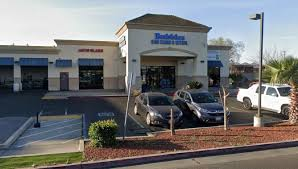
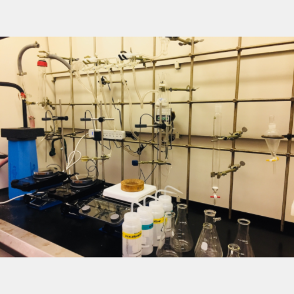
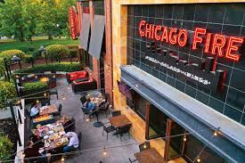
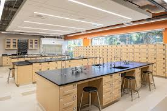

Growing up with a natural curiosity about the living world, I pursued a Bachelor of Science in Biology ay University of California, Riverside, graduating this past spring. Throughout my four years, I built a strong foundation in core disciplines including cell biology, genetics, ecology, and physiology. Some of my most rewarding coursework came in my junior and senior years, when I enrolled in upper-division electives like conservation biology and microbiology, which helped me narrow my interests toward environmental science. I maintained a solid GPA while balancing a part-time job on campus, which taught me the importance of time management and discipline. My academic journey wasn't without its challenges — organic chemistry tested my resolve in my sophomore year — but pushing through those difficult courses gave me a deeper appreciation for scientific thinking and problem-solving. I graduated with a strong understanding of both laboratory techniques and theoretical frameworks, and I left with the confidence that I had developed the analytical mindset necessary to contribute meaningfully to the field of biology.
During my undergraduate years, I had the opportunity to work as a research assistant in Dr. Polly Campbell's Genetics lab, an experience that proved to be one of the most formative of my academic career. Under the supervision of a faculty advisor, I assisted with a long-term study examining the effects of different genes that affect behavior and physiology, specifically creeping voles in the surrounding region. My responsibilities included collecting field samples, maintaining detailed observational records, preparing specimens, and entering data into research databases. I also learned to operate standard laboratory equipment, including microscopes, centrifuges, and spectrophotometers, while following strict safety and procedural protocols. In my senior year, I took on a small independent component of the project for my capstone thesis, analyzing the KDM5 gene in creeping voles. Though the scope of my contribution was modest, presenting my findings at an undergraduate research symposium was an incredibly proud moment that confirmed my passion for scientific inquiry and gave me a taste of what a career in research could look like.
Since graduating, I have been actively building on the foundation my degree provided while exploring the many directions a biology career can take. I am proficient in basic laboratory techniques, scientific writing, and data analysis using tools like Excel and introductory R, skills I developed through both coursework and my research assistantship. I have also volunteered with a local conservation nonprofit, helping with habitat restoration events and community education outreach, which deepened my interest in applied environmental work. I am currently exploring graduate school programs in genetics and environmental biology, as I am drawn to research that has direct real-world implications for biodiversity and genetic health. At the same time, I am open to entry-level roles in genetic laboratories as I continue to grow professionally. I am eager, adaptable, and aware that I still have much to learn — but I bring genuine enthusiasm, a solid scientific grounding, and a strong work ethic to every opportunity I pursue in this field.
• Set up teaching labs
• Mixed chemicals
• Assisted students
• Ensured customers were satisfied with food
• Took orders for food
• Trained new servers
• Monitored transctions of customers
• Stocked food and supplies inside
• Occasianlly help wash cars outside



